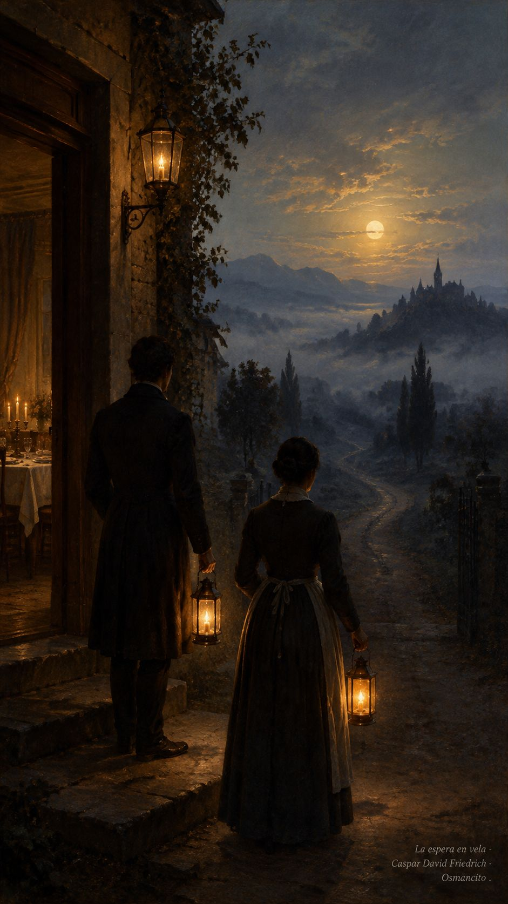
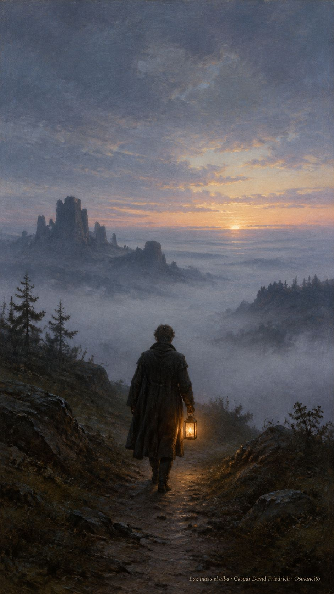
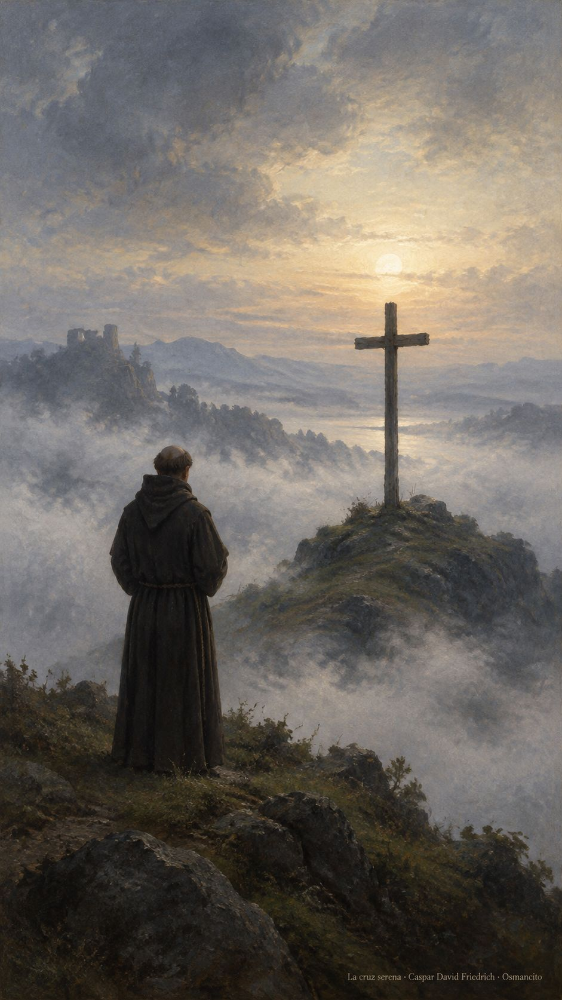

20 de octubre de 2026
¡Buenos días!
La espera encendida
10
Estén listos, con la túnica puesta y las lámparas encendidas
Lucas 12,35. Fuente
Que la noche no nos encuentre apagados. Que tengamos la túnica ceñida y la lámpara al alcance de la mano, no por miedo al que llega sino por gusto de abrirle. Que la espera no sea duermevela triste sino casa ordenada, mesa puesta y corazón despierto. Que quien toque a la puerta a cualquier hora encuentre luz en la ventana y palabra amable. Que velar sea nuestra manera de querer: atentos, listos, sin ninguna prisa.

- Los criados con lámparas junto a la puerta recogen Lucas 12: la casa despierta espera al que vuelve.

- La luz pequeña caminando hacia la mañana encarna la vigilia que no se apaga.
¡Feliz martes 20 de octubre!
😊🙋♂
San Pablo de la Cruz, presbítero
Que el dolor del mundo no nos sea ajeno. En la memoria de Pablo de la Cruz, que meditó la Pasión hasta hacerla escuela de ternura, aprendamos a mirar el sufrimiento de frente y a consolar sin fórmulas. Que la cruz no sea para nosotros adorno ni amenaza, sino recordatorio de que el amor aguanta. Que sepamos quedarnos junto a quien sufre, en silencio y sin prisa.

- El fraile ante la cruz en la niebla recuerda la escuela de ternura de Pablo de la Cruz.
¡Feliz memoria de san Pablo de la Cruz!